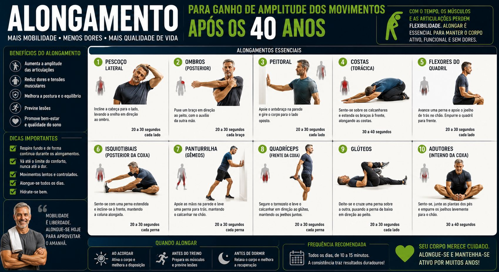

Alongamento e Mobilidade: O Segredo para Treinar Sem Dores
Com o passar dos anos, é natural que articulações percam amplitude e músculos fiquem mais rígidos. Para quem busca evoluir com segurança após os 40, alongamento e mobilidade não são opcionais: são a base da longevidade física. Sem isso, você encurta carreira na academia.
Treinar pesado sem preparar estrutura articular aumenta exponencialmente risco de lesões como tendinites, estiramentos, bursite no ombro e dores lombares. O segredo para alta performance 40+ é saber momento e técnica certa de se alongar. E é simples: mobilidade antes, alongamento estático depois.

1. Diferença entre Mobilidade, Alongamento Dinâmico e Estático (Não erre mais)
Entender quando usar cada técnica faz toda diferença no rendimento. Muita gente alonga errado e perde força.
| Tipo | Quando fazer | Objetivo 40+ |
|---|---|---|
| Mobilidade articular | Pré-treino 5 min | Lubrificar articulação, tirar estalo |
| Alongamento dinâmico | Pré-treino 3-5 min | Aquecer músculo, aumentar temperatura |
| Alongamento estático | Pós-treino ou à noite | Relaxar, recuperar flexibilidade |
- Mobilidade Articular (Pré-treino): Movimentos controlados focados em lubrificar articulações (ombros, quadril, tornozelos, punhos). Prepara estrutura para suportar carga. Ex: círculos de ombro, rotação de quadril, tornozelo na parede. 10 repetições cada.
- Alongamento Dinâmico (Pré-treino): Movimentos ativos e contínuos que aumentam temperatura corporal e preparam músculos para esforço imediato. Ex: balanço de perna, elevação de joelhos, rotação de tronco com bastão. Não segura posição, movimenta.
- Alongamento Estático (Pós-treino ou momento separado): Posições mantidas por 20 a 40 segundos sem balanço. Ideal para relaxar musculatura e restaurar flexibilidade natural longe de carga máxima. Ex: posterior de coxa sentado, peitoral na porta.
Dica do Velho Guerreiro: Evite alongamentos estáticos intensos e prolongados imediatamente antes de pegar cargas pesadas. Isso reduz temporariamente força máxima em até 8%. Priorize mobilidade dinâmica no aquecimento! Estático deixa para depois do treino ou antes de dormir.
2. Benefícios Diretos Para Sua Evolução Após os 40
Inclusão contínua desses exercícios na rotina semanal traz retornos visíveis tanto em ganho de massa quanto prevenção.
- Melhora na amplitude dos exercícios: Quadril e tornozelos móveis permitem agachamento mais profundo e biomecanicamente correto, ativando mais glúteo e menos lombar. Sem mobilidade, você compensa e machuca.
- Prevenção de lesões: Articulações saudáveis absorvem melhor impacto e distribuem esforço. Ombro móvel = menos tendinite. Quadril móvel = menos dor no joelho e lombar.
- Redução da rigidez e postura ereta: Ajuda combater encurtamento provocado por tempo sentado no trabalho. Peitoral encurtado puxa ombro pra frente, causa dor cervical. Alongar peitoral 30 seg por dia já melhora postura.
- Recuperação otimizada: Estimula circulação sanguínea no pós-treino, auxiliando fluxo de nutrientes para tecidos. Você acorda menos dolorido no dia seguinte.
- Mais força por amplitude completa: Músculo alongado gera mais força em amplitude total. Agachar profundo com mobilidade = mais hipertrofia que agachar curto travado.

3. Como Aplicar na Rotina: Meu Protocolo de 10 Minutos Velho Guerreiro
Você não precisa passar horas se alongando. Dedique apenas 10 minutos divididos:
Antes do treino (6 min) - Mobilidade + Dinâmico:
- Dia de perna: 2 min círculos de quadril + 2 min tornozelo na parede (joelho encosta parede sem tirar calcanhar) + 2 min balanço de perna frente/trás
- Dia de superior: 2 min círculos de ombro + 2 min abertura peitoral com elástico + 2 min rotação torácica deitado
Depois do treino ou à noite (4 min) - Estático:
- 30 seg cada: posterior coxa, quadríceps em pé segurando pé, peitoral na porta, lombar abraçando joelhos deitado. Sem dor aguda, só desconforto leve suportável. Respire fundo.
Mantenha consistência, respeite limites e evite forçar até dor aguda. Objetivo é construir sustentação para treinar forte durante anos, não virar contorcionista. 10 min por dia por 21 dias e você já sente joelho estalando menos e agachando mais fundo.
Conclusão: Flexibilidade é Longevidade
O alongamento e mobilidade são ferramentas que garantem sua longevidade na academia. Unir força com flexibilidade constrói corpo resistente, funcional e livre de dores. Homem de 20 anos treina duro, homem de 40+ treina inteligente: aquece articulação antes, fortalece depois e alonga para recuperar.
Invista 10 minutos no seu aquecimento hoje e colha frutos no desempenho amanhã e por muitos anos. Comece hoje mesmo com protocolo de 6 min antes do treino.
Força e disciplina.
— Velho Guerreiro